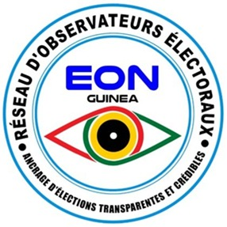
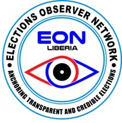
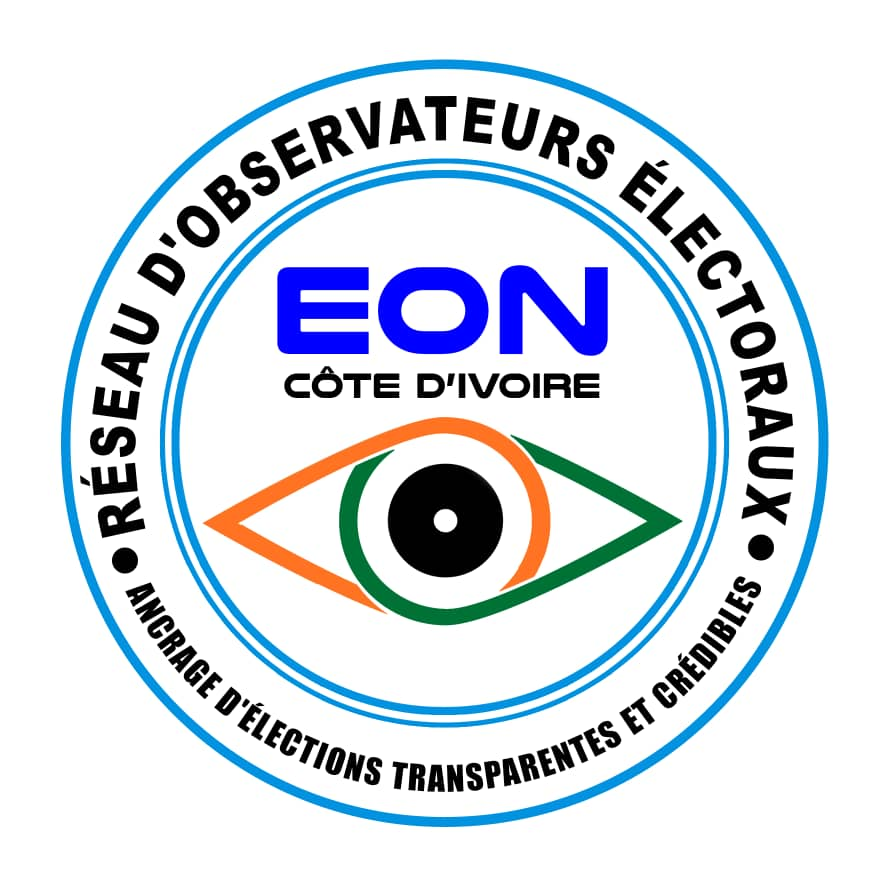

About EON-SL
Who We Are & What We Do
Elections Observer Network Sierra Leone (EON-SL) is an independent, impartial and non-partisan consortium of civil society groups, faith-based and professional bodies, youth and women’s groups observing processes and procedures throughout the electoral cycle.

About EON-SL
Strengthening citizen participation in electoral processes.
Elections Observer Network Sierra Leone (EON-SL) is an independent, impartial and non-partisan consortium of civil society groups, faith-based and professional bodies, youth and women’s groups.
EON-SL was established in 2020 and works to observe processes and procedures throughout the electoral cycle, while mobilising citizens and complementing the efforts of Election Management Bodies.
Its mandate is to mobilize citizens to actively participate in electoral processes and contribute to free, fair, inclusive, peaceful, transparent and credible elections.
EON-SL at a Glance
Our Organisation
EON-SL brings together civil society, professional, faith-based, youth and women’s groups around citizen participation and electoral observation.
Our Direction
Vision & Mission
EON-SL's work is guided by its vision for democratic participation and its mission of partnership with Election Management Bodies.
Vision
Is a democratic society where transparent, inclusive and credible elections exist for the furtherance of the wishes and aspirations of the citizens.
Mission
Our mission Is to work in partnership with all Election Management Bodies (EMBs) in enhancing citizen’s participation in the electoral processes.
What We Focus On
Thematic Areas
EON-SL's work is structured around key areas supporting credible elections, democratic governance and meaningful citizen participation.
01
Credible, Transparent & Democratic Good Governance
Promoting transparent and accountable democratic governance.
02
Elections & Electoral Reforms
Supporting informed observation and discussion of electoral processes and reforms.
03
Voter Registration, Education & Participation
Encouraging informed and meaningful citizen participation.
04
Peace & Human Right Education
Supporting peaceful participation and awareness of rights.
05
Women’s Empowerment through Political Participation
Supporting women's participation in political and electoral processes.
06
Research, Monitoring & Evaluation
Generating evidence through research, monitoring and evaluation.
Regional Presence
EON Beyond Sierra Leone
EON has established a presence beyond Sierra Leone, extending its network and experience to Liberia, Côte d’Ivoire and Guinea.

GuineaGuinea
EON mission and country presence in Guinea.
Visit Guinea Office
LiberiaLiberia
EON mission and country presence in Liberia.
Visit Liberia Office
Côte d’IvoireCôte d’Ivoire
EON mission and country presence in Côte d’Ivoire.
Visit Côte d’Ivoire Office
What Guides Us
Our Core Values
EON-SL is guided by principles intended to sustain credible, transparent and professional electoral observation.
Transparency & Accountability
Our activities will be open to the public.
Credibility
We will endeavour to give objective and honest reports on electoral processes.
Professionalism
We will work in line with standard rules and regulations.
Independence
Members are properly vetted to avoid political party influence.
Impartiality
EON-SL does not take sides.
Integrity
We maintain self-respect, trust, honesty and discipline.
Co-operation
We work with partners, donors and Election Management Bodies.
Volunteerism
We encourage volunteering and service to the nation.
Anchoring Transparent & Credible Elections
Learn more about EON-SL's observation work, civic education, reports and opportunities to participate.